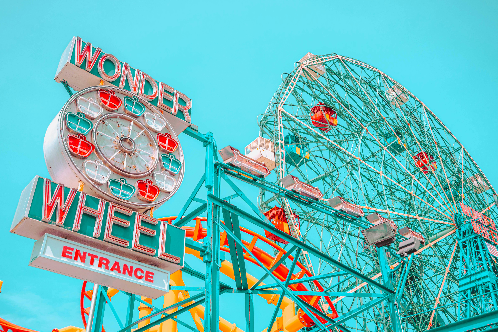
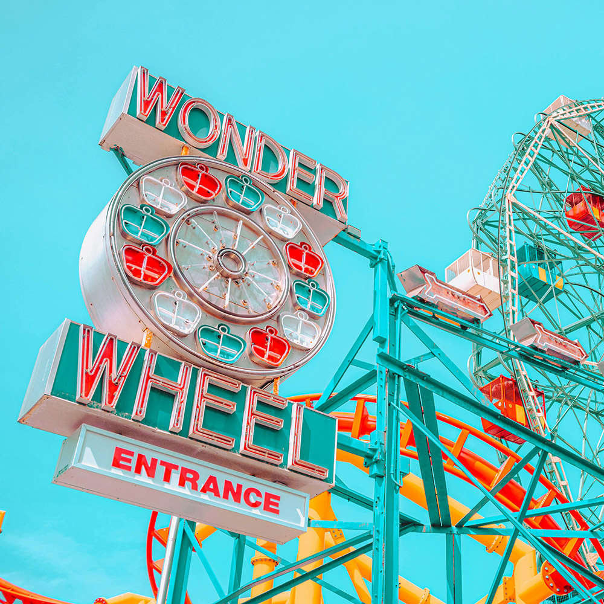
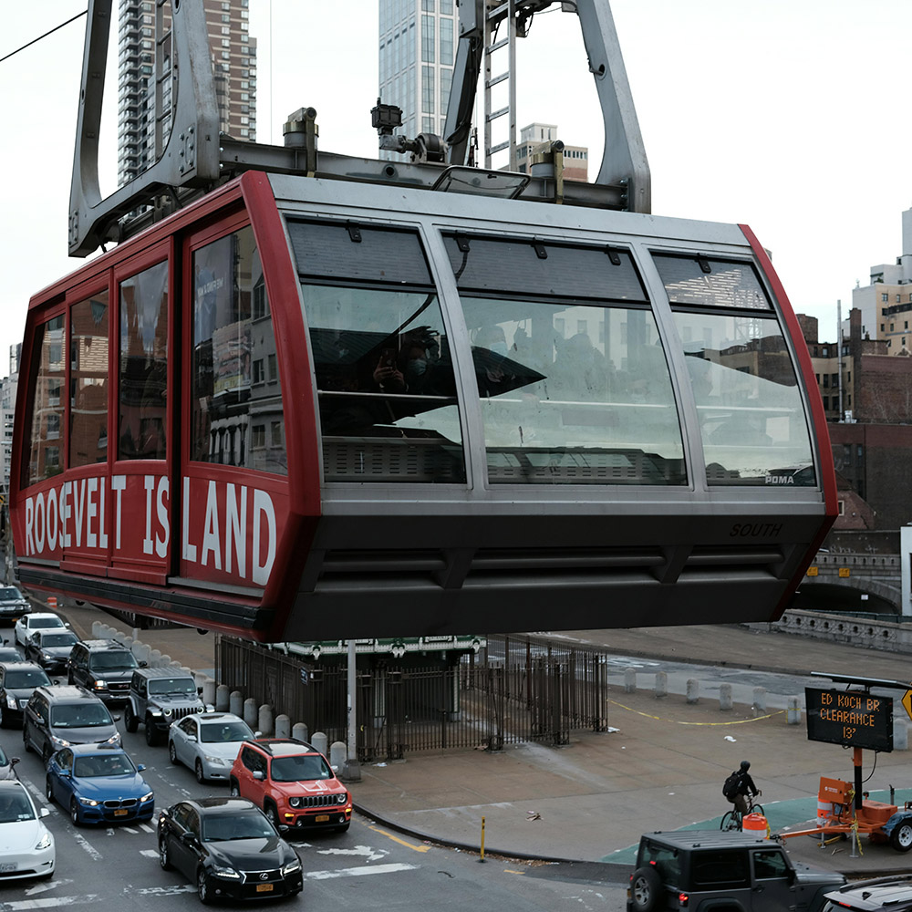
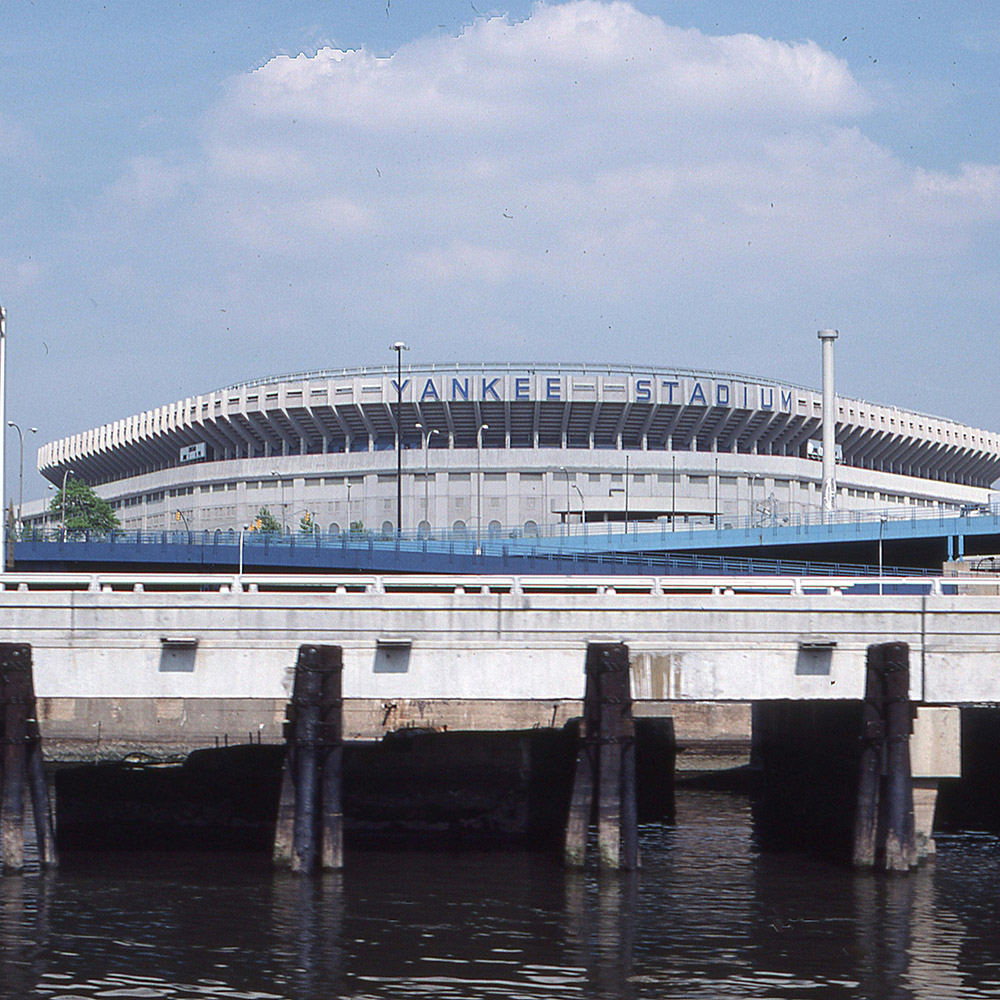
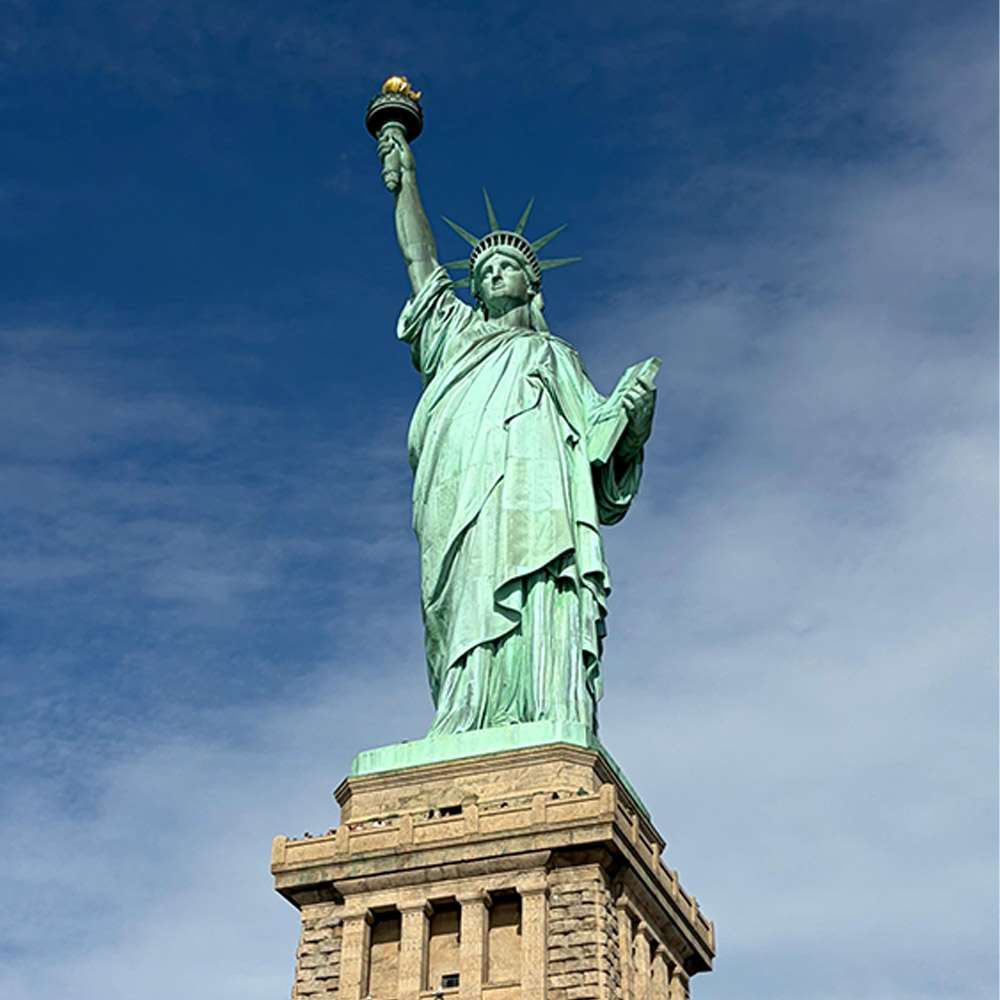
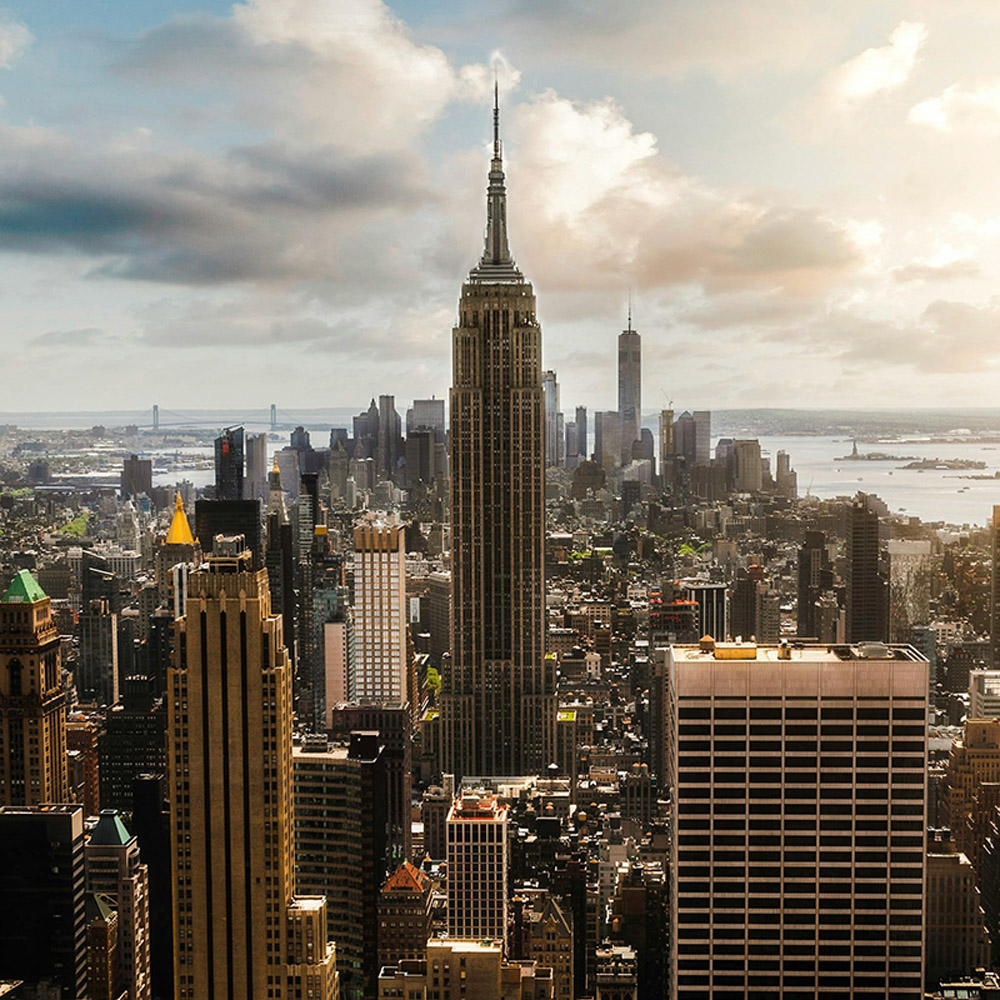
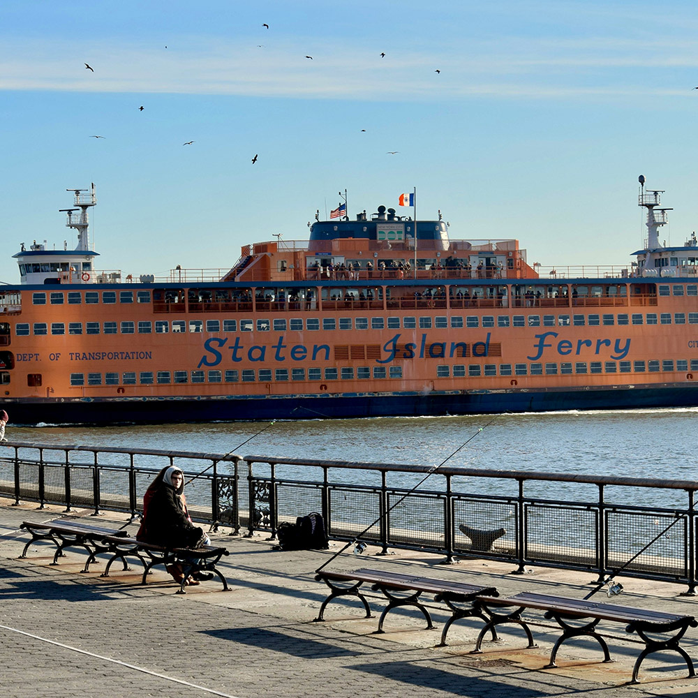

NYC Landmarks Virtual Tour
This site highlights some interesting landmarks across New York City's five boroughs.
Featured Landmark

NYC Landmarks






This site highlights some interesting landmarks across New York City's five boroughs.






